- Problem Description
- Beliefs as Gaussians
- Tracking with Gaussian Probabilities
- Predictions with Gaussians
- Updates with Gaussians
- First Kalman Filter
- Code Walkthrough
- Kalman Gain
- Full Description of the Algorithm
- Comparison with g-h and Discrete Bayes Filters
One Dimensional Kalman Filters
충북대학교 지능로봇공학과 문성태 교수
Contents
- Introduction to Designing a Filter
- Example: Extreme Amounts of Noise
- Example: Incorrect Process Variance
- Example: Bad Initial Estimate
- Example: Large Noise and Bad Initial Estimate
- Exercise: Interactive Plots
- Exercise - Nonlinear Systems
- Fixed Gain Filters
- Summary
A Bayesian Filter with Gaussians
- 1 차원: 상태 변수 하나만 추적, 예: x 축 위치
- 다차원: 위치, 속도, 가속도를 함께 추적하는 필터로 확장 가능
핵심: Kalman filter 는 Gaussian 을 사용하는 Bayesian filter, g-h 와 discrete Bayes 의 방법을 그대로 따름
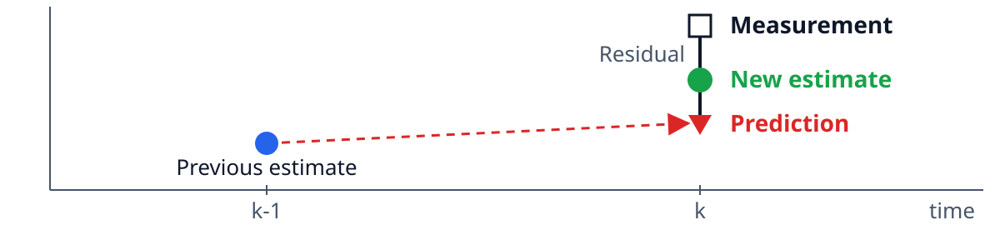
Problem Description
- 센서: RFID 추적기, 복도 왼쪽 끝에서 개까지의 거리를 m 단위로 보고
- 오차: 23.4 는 23.0 이나 23.7 일 수 있지만 47.6 일 가능성은 매우 낮음
- 오차 모양: 참값 양쪽으로 고르게, 작은 오차가 큰 오차보다 흔함 → Gaussian
- 예측: 개의 이동 예측도 넘치거나 모자랄 수 있음 → Gaussian
핵심: 측정과 예측 모두의 불확실성을 Gaussian 으로 모델링
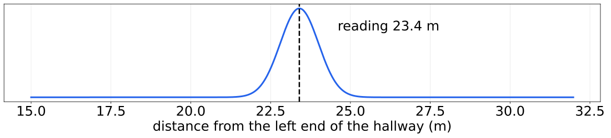
Beliefs as Gaussians
- 개 위치의 믿음을 Gaussian 으로 표현, 10 m 에 있다고 믿고 그 믿음의 분산은 1 m^2
- 그래프에서 10 m 가 가장 유력하지만 9 ~ 11 m 도 충분히 가능한 꽤 부정확한 믿음
- 개가 정지한 채 센서가 10.2 m 를 보고하면 이 정보로 추정을 개선할 수 있는지가 질문
- 조건: N(10, 1), 평균 10 m, 분산 1 m^2, x 범위 4 ~ 16 m
import filterpy.stats as stats stats.plot_gaussian_pdf(mean=10., variance=1., xlim=(4, 16), ylim=(0, .5));
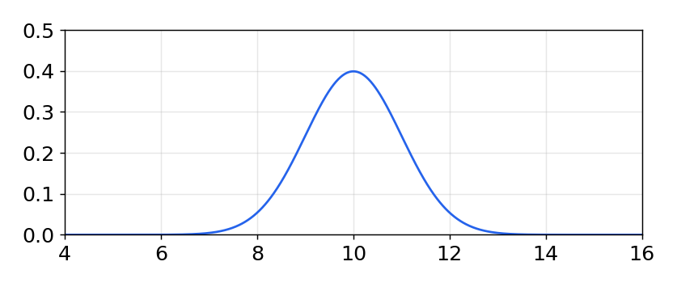
500 Readings
- 정지한 개를 센서로 500 번 읽은 값을 N(10, 1) 의 난수로 만들어 그래프로 표시
- 값이 8 ~ 12 사이에서 10 근처에 모이고, 계산한 평균도 거의 정확히 10
- 이렇게 움직이는 개는 없으므로 잡음 섞인 센서 값, 개는 10 m 에 분산 1 로 있다고 표현
- 조건: randn(500)*1 + 10, 측정 500 개
import numpy as np from numpy.random import randn import matplotlib.pyplot as plt xs = range(500) ys = randn(500)*1. + 10. plt.plot(xs, ys) print('Mean of readings is {:.3f}'.format(np.mean(ys)))
Mean of readings is 9.935
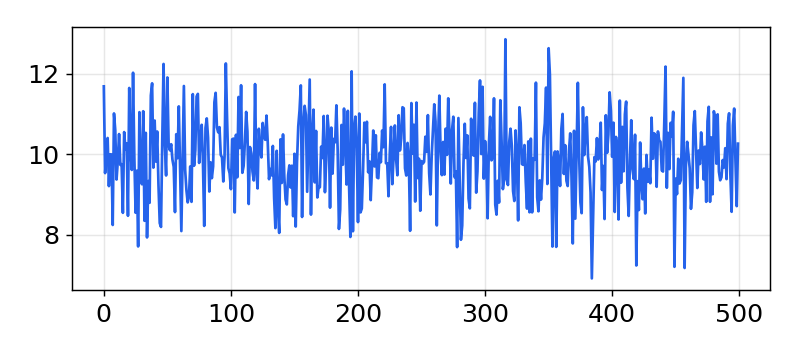
Histogram to Gaussian
| Discrete Bayes | Gaussian | Step | |
|---|---|---|---|
| 수식 | Predict | ||
| 수식 | Update |
질문: 예측은 합(전확률), 갱신은 곱(Bayes), 두 Gaussian 의 합과 곱이 다시 Gaussian 이어야 성립
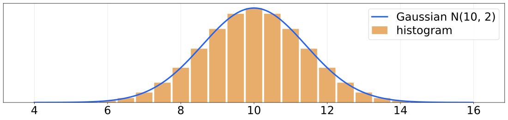
Predictions with Gaussians
핵심: 예측 위치는 이전 위치 + 이동, 분산은 더해짐, 예측할 때마다 정보가 줄어듦
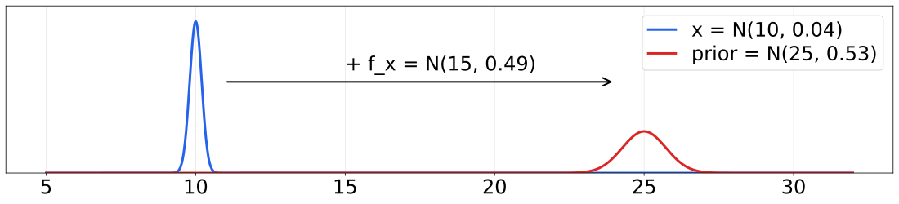
predict() with namedtuple
- Gaussian 을 이름 붙은 tuple 로 구현, g.mean, g.var 또는 g[0], g[1] 로 접근
- predict() 는 위치와 이동의 두 Gaussian 을 더해 prior 계산, 평균과 분산을 각각 더함
- 결과 N(25, 0.53) 이 손 계산과 일치, 이동의 불확실성만큼 분산이 커짐
- 조건: pos = N(10, 0.2^2), move = N(15, 0.7^2)
from collections import namedtuple gaussian = namedtuple('Gaussian', ['mean', 'var']) gaussian.__repr__ = lambda s: '𝒩(μ={:.3f}, 𝜎²={:.3f})'.format(s[0], s[1]) g1 = gaussian(3.4, 10.1) g2 = gaussian(mean=4.5, var=0.2**2) print(g1, g2) print(g1.mean, g1[0], g1[1], g1.var) def predict(pos, movement): return gaussian(pos.mean + movement.mean, pos.var + movement.var) pos = gaussian(10., .2**2) move = gaussian(15., .7**2) predict(pos, move)
𝒩(μ=3.400, 𝜎²=10.100) 𝒩(μ=4.500, 𝜎²=0.040)
3.4 3.4 10.1 10.1
𝒩(μ=25.000, 𝜎²=0.530)
Updates with Gaussians
- prior 와 likelihood 를 모두 Gaussian 으로 두고 두 Gaussian 의 곱으로 update 구현
- 결과 평균은 prior 와 측정의 가중합, 분산은 두 분산의 결합으로 평균 값과 무관
- 조건: prior N(10, 0.2^2), 측정 N(11, 0.1^2)
def gaussian_multiply(g1, g2): mean = (g1.var * g2.mean + g2.var * g1.mean) / (g1.var + g2.var) variance = (g1.var * g2.var) / (g1.var + g2.var) return gaussian(mean, variance) def update(prior, likelihood): posterior = gaussian_multiply(likelihood, prior) return posterior # test the update function predicted_pos = gaussian(10., .2**2) measured_pos = gaussian(11., .1**2) estimated_pos = update(predicted_pos, measured_pos) estimated_pos
𝒩(μ=10.800, 𝜎²=0.008)
Measure Twice
- N(10, 1) 을 자기 자신과 곱한 결과를 원래 Gaussian 과 같은 그래프에 표시
- 곱은 평균이 그대로 10 이고 더 높고 좁은 모양, 분산은 0.5 로 감소
- 같은 값을 두 번 재면 그 값을 더 확신, Gaussian 곱은 Measure twice, cut once 의 수학 모델
- 조건: z = N(10, 1), 같은 값을 두 번 측정한 상황
z = gaussian(10., 1.) # Gaussian N(10, 1) product = gaussian_multiply(z, z) xs = np.arange(5, 15, 0.1) ys = [stats.gaussian(x, z.mean, z.var) for x in xs] plt.plot(xs, ys, label='$\\mathcal{N}(10,1)$') ys = [stats.gaussian(x, product.mean, product.var) for x in xs] plt.plot(xs, ys, ls='--', label='$\\mathcal{N}(10,1) \\times \\mathcal{N}(10,1)$') plt.legend() print(product)
𝒩(μ=10.000, 𝜎²=0.500)
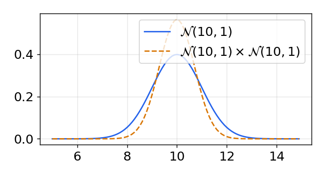
Two Different Measurements
- 두 사람이 탁자와 벽 사이 거리를 각각 10.2 m, 9.7 m 로 측정한 상황
- 두 측정을 똑같이 신뢰하면 곱의 평균은 9.95 m, 측정과 prior 의 결합도 같은 수학
- 조건: z1 = N(10.2, 1), z2 = N(9.7, 1)
def plot_products(g1, g2): plt.figure() product = gaussian_multiply(g1, g2) xs = np.arange(5, 15, 0.1) ys = [stats.gaussian(x, g1.mean, g1.var) for x in xs] plt.plot(xs, ys, label='$\\mathcal{N}$' + '$({},{})$'.format(g1.mean, g1.var)) ys = [stats.gaussian(x, g2.mean, g2.var) for x in xs] plt.plot(xs, ys, label='$\\mathcal{N}$' + '$({},{})$'.format(g2.mean, g2.var)) ys = [stats.gaussian(x, product.mean, product.var) for x in xs] plt.plot(xs, ys, label='product', ls='--') plt.legend(); z1 = gaussian(10.2, 1) z2 = gaussian(9.7, 1) plot_products(z1, z2)
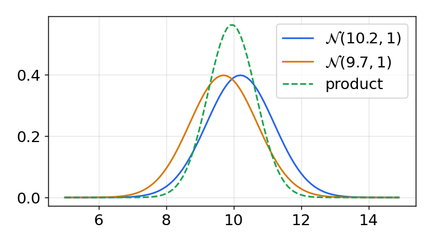
Accurate and Inaccurate
- 부정확한 prior 와 정확한 측정, 정확도를 서로 바꾼 경우의 곱을 위아래로 비교
- 결과는 두 입력보다 높고 좁으며 분산이 작은 쪽에 가까움, 더 확신하는 값에 큰 가중치
- 조건: 위: prior N(8.5, 1.5), 측정 N(10.2, 0.5), 아래: 두 분산을 서로 바꿈
prior, z = gaussian(8.5, 1.5), gaussian(10.2, 0.5) plot_products(prior, z)
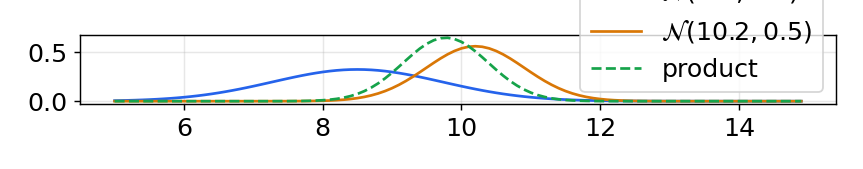
prior, z = gaussian(8.5, 0.5), gaussian(10.2, 1.5) plot_products(prior, z)
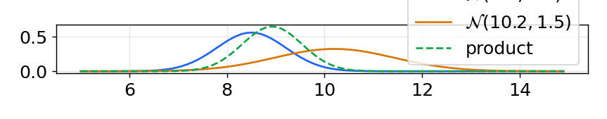
Interactive Example
- 두 Gaussian 의 평균과 분산을 슬라이더로 바꾸면 곱을 다시 계산해 그림을 새로 그림
- 곱의 평균이 항상 두 평균 사이에 있고 분산이 작은 쪽으로 끌려가는지 관찰
- 조건: m1 5 ~ 10, m2 10 ~ 15, v1, v2 0.1 ~ 2
from ipywidgets import interact def interactive_gaussian(m1, m2, v1, v2): g1 = gaussian(m1, v1) g2 = gaussian(m2, v2) plot_products(g1, g2) interact(interactive_gaussian, m1=(5, 10., .5), m2=(10, 15, .5), v1=(.1, 2, .1), v2=(.1, 2, .1));
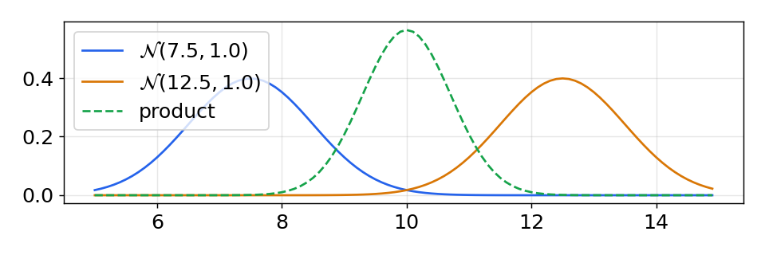
Simulating the Dog
- 필터를 시험하기 위해 복도를 걷는 개의 이동과 잡음 섞인 RFID 측정을 시뮬레이션
- process_var 는 개 이동의 분산, sensor_var 는 측정 하나의 분산, 측정 10 개 생성
- 조건: process_var 1, sensor_var 2, 초기 N(0, 20^2) 는 0 ± 60 m 를 99.7% 로 믿음
np.random.seed(13) process_var = 1. # variance in the dog's movement sensor_var = 2. # variance in the sensor x = gaussian(0., 20.**2) # dog's position, N(0, 20**2) velocity = 1 dt = 1. # time step in seconds process_model = gaussian(velocity*dt, process_var) # displacement # simulate dog and get measurements dog = DogSimulation( x0=x.mean, velocity=process_model.mean, measurement_var=sensor_var, process_var=process_model.var) # create list of measurements zs = [dog.move_and_sense() for _ in range(10)] print(np.round(zs, 3))
[ 1.354 1.882 4.341 7.156 6.939 6.844 9.847 12.553 16.273 14.8 ]
The Kalman Filter Loop
- 측정마다 predict 로 prior, 측정으로 likelihood 를 만들고 곱으로 update 하는 첫 필터
- 첫 prior 분산 401 이 측정 후 1.99 로 급감, 센서 분산 2 보다 약간 작은 값
- 이후 분산은 1.0 으로 수렴, 최종 추정이 실제 위치에 가까움
- 조건: 초기 N(0, 400), 이동 N(1, 1), 측정 분산 2, 측정 10 개
print('PREDICT\t\t\tUPDATE') print(' x var\t\t z\t x var') # perform Kalman filter on measurement z for z in zs: prior = predict(x, process_model) likelihood = gaussian(z, sensor_var) x = update(prior, likelihood) print_gh(prior, x, z) print() print('final estimate: {:10.3f}'.format(x.mean)) print('actual final position: {:10.3f}'.format(dog.x))
PREDICT UPDATE
x var z x var
1.000 401.000 1.354 1.352 1.990
2.352 2.990 1.882 2.070 1.198
3.070 2.198 4.341 3.736 1.047
4.736 2.047 7.156 5.960 1.012
6.960 2.012 6.939 6.949 1.003
7.949 2.003 6.844 7.396 1.001
8.396 2.001 9.847 9.122 1.000
10.122 2.000 12.553 11.338 1.000
12.338 2.000 16.273 14.305 1.000
15.305 2.000 14.800 15.053 1.000
final estimate: 15.053
actual final position: 14.838
Prediction, Measurement, Estimate
- 슬라이더 단계마다 prediction(삼각형), 측정(원), 추정(선)을 차례로 표시
- 추정은 항상 prediction 과 측정 사이, 두 값 밖을 고르는 것은 의미가 없음
- 조건: step 1 ~ 30, 측정 1 개당 3 단계 (prediction, 측정, 추정)
from ipywidgets import interact, IntSlider xs, predictions = [], [] x = gaussian(0., 20.**2) for z in zs: prior = predict(x, process_model) x = update(prior, gaussian(z, sensor_var)) predictions.append(prior.mean) xs.append(x.mean) def plot_filter(step): step -= 1 i = step // 3 + 1 plots.plot_predictions(predictions[:i]) plots.plot_measurements(zs[:i - (step % 3 == 0)]) plots.plot_filter(xs[:i - (step % 3 != 2)]) plt.xlim(-1, 10); plt.ylim(0, 20); plt.legend(loc=2); interact(plot_filter, step=IntSlider( value=1, min=1, max=len(predictions)*3));
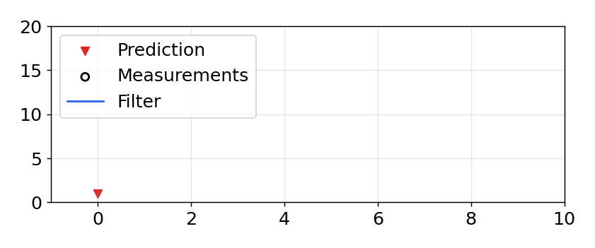
Code Walkthrough
- process_var = 1: 모델 오차, 개는 언덕이나 다람쥐 때문에 예측대로 움직이지 않음
- sensor_var = 2: 측정 하나의 분산
- x = N(0, 20^2): 0 ± 60 m 를 99.7% 로 믿는다는 뜻(±3 sigma)
- 첫 주기: prior (1.0, 401), 예측은 항상 분산 증가
- 갱신: 측정 1.354, 분산 큰 prior 는 거의 무시 → 1.352
- 분산: 401 → 1.99, 센서보다 약간 작음
핵심: 분산은 매직 넘버가 아님, 실제를 반영하지 않으면 필터 성능이 나빠짐
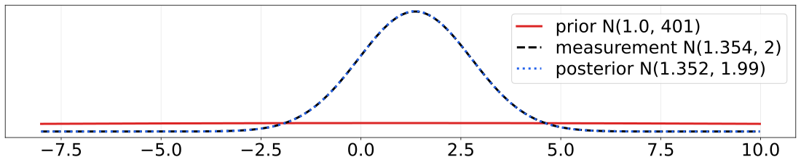
Five Lines of Math
- 함수 호출 없이 predict 3 줄, update 2 줄의 수식만으로 같은 필터를 다시 작성
- 대부분의 코드는 초기화, 저장, 그림이고 필터링 자체는 5 줄의 단순한 수식
- 조건: 같은 측정 zs, 초기 위치 0, 분산 400, 속도 1
pos, var = 0., 20.**2 xs = [] for z in zs: # predict dx = velocity*dt pos = pos + dx var = var + process_var # update pos = (var*z + sensor_var*pos) / (var + sensor_var) var = (var * sensor_var) / (var + sensor_var) xs.append(pos) plots.plot_measurements(zs) plots.plot_filter(xs) plt.legend(loc=2);
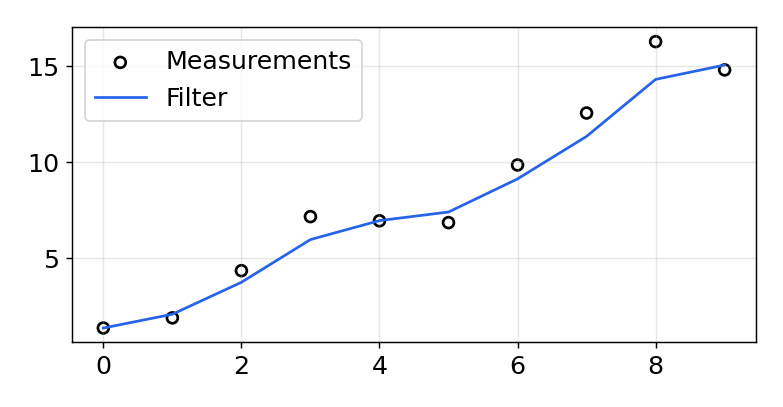
More Data
- 측정을 25 개로 늘리고 분산도 키워 필터 성능과 분산 변화를 그래프로 확인
- 분산은 몇 단계 만에 2.16 으로 수렴, 표준편차 1.47 m 로 센서의 2.12 m 보다 작음
- 조건: process_var 2, sensor_var 4.5, 초기 N(0, 400), N = 25, 노란 띠는 분산
process_var = 2. sensor_var = 4.5 x = gaussian(0., 400.) process_model = gaussian(1., process_var) N = 25 dog = DogSimulation(x.mean, process_model.mean, sensor_var, process_var) zs = [dog.move_and_sense() for _ in range(N)] xs, priors = np.zeros((N, 2)), np.zeros((N, 2)) for i, z in enumerate(zs): prior = predict(x, process_model) x = update(prior, gaussian(z, sensor_var)) priors[i] = prior xs[i] = x plots.plot_measurements(zs) plots.plot_filter(xs[:, 0], var=priors[:, 1]) plots.plot_predictions(priors[:, 0]) plots.show_legend() print_variance(xs)
4.4502 2.6507 2.2871 2.1955 2.1712
2.1647 2.1629 2.1625 2.1623 2.1623
2.1623 2.1623 2.1623 2.1623 2.1623
2.1623 2.1623 2.1623 2.1623 2.1623
2.1623 2.1623 2.1623 2.1623 2.1623
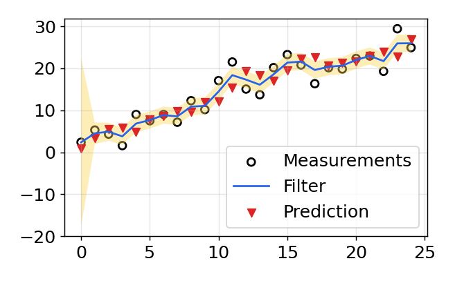
Exercise: Modify Variance Values
- process_var 와 sensor_var 를 바꿔 가며 수렴 분산이 어느 쪽에 더 좌우되는지 비교
- 측정값과 무관하게 분산만 계산, sensor_var = 2 쪽이 더 작은 값으로 수렴
- 조건: (process_var, sensor_var) = (40, 2), (2, 40), 50 단계
def converged_variance(process_var, sensor_var, N=50): x = gaussian(0., 400.) process_model = gaussian(1., process_var) ps = [] for _ in range(N): prior = predict(x, process_model) x = update(prior, gaussian(0., sensor_var)) ps.append(x.var) return ps for q, r in ((40, 2), (2, 40)): ps = converged_variance(q, r) plt.plot(ps, label='process_var={}, sensor_var={}'.format(q, r)) print(q, r, '->', round(ps[-1], 3)) plt.ylim(0, 20); plt.legend();
40 2 -> 1.909
2 40 -> 8.0
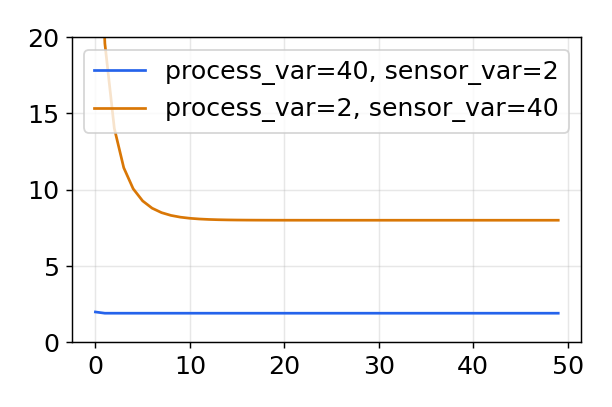
Kalman Gain
예: 측정이 prior 보다 9 배 정확하면 K = 9/10, 같은 정확도면 K = 1/2 로 두 값의 평균
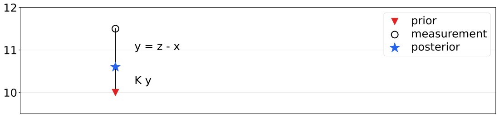
Kalman Form
- update 를 residual y = z - x 와 Kalman gain K = P / (P + R) 로 다시 작성
- prior 에 K y 를 더해 posterior 계산, Bayesian 곱과 수학적으로 동일한 결과
- 조건: P 상태 분산, Q 공정 잡음, R 측정 잡음, prior N(25, 0.53), 측정 N(26, 1)
def update(prior, measurement): x, P = prior # mean and variance of prior z, R = measurement # mean and variance of measurement y = z - x # residual K = P / (P + R) # Kalman gain x = x + K*y # posterior P = (1 - K) * P # posterior variance return gaussian(x, P) def predict(posterior, movement): x, P = posterior # mean and variance of posterior dx, Q = movement # mean and variance of movement x = x + dx P = P + Q return gaussian(x, P) prior = predict(gaussian(10., .2**2), gaussian(15., .7**2)) update(prior, gaussian(26., 1.))
𝒩(μ=25.346, 𝜎²=0.346)
Full Description of the Algorithm
Initialization
- 필터 상태 초기화
- 상태에 대한 믿음 초기화
Predict
- 시스템 거동으로 다음 시점 상태 예측
- 예측 불확실성을 반영해 믿음 조정
Update
- 측정과 그 정확도 획득
- 추정 상태와 측정의 residual 계산
- 측정과 예측 중 더 정확한 쪽으로 비율 계산
- 그 비율로 예측과 측정 사이에 상태 설정
- 측정 확실성에 따라 믿음 갱신
핵심: 이 필터들은 모두 같은 알고리즘, 수학적 세부만 다름, 수식이 무엇을 왜 계산하는지 이해
Univariate Kalman Filter Equations
| Equation | Implementation | Kalman Form | |
|---|---|---|---|
| Predict | |||
| Update | |||
핵심: 예측하고, 측정하고, 둘 사이의 어딘가를 새 추정으로
Uniform versus Gaussian
- g-h 필터의 오차 막대는 범위 안 모든 값이 같은 확률인 uniform 분포
- 같은 두 저울을 Gaussian 으로 그려 오차 막대와 함께 비교
- 대부분의 센서는 참값 근처를 더 자주 보고하므로 Gaussian 이 더 현실적
- 조건: 저울 A N(80, 1.5^2) kg, 저울 B N(85, 4.5^2) kg
xs = np.arange(72, 95, 0.05) ys = [stats.gaussian(x, 80, 1.5**2) for x in xs] plt.plot(xs, ys, label='A', color='g') ys = [stats.gaussian(x, 85, 4.5**2) for x in xs] plt.plot(xs, ys, label='B', color='b') plt.legend(); plt.errorbar(80, [0.04], xerr=[1.5], fmt='o', color='g', capthick=2, capsize=10) plt.errorbar(85, [0.015], xerr=[4.5], fmt='o', color='b', capthick=2, capsize=10);
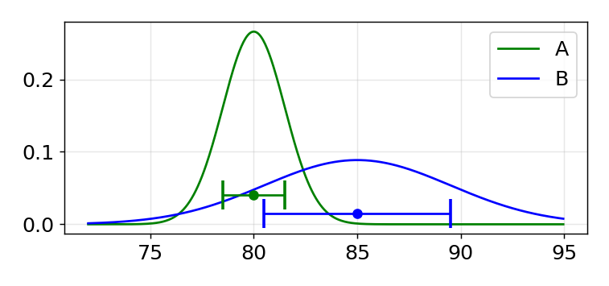
Discrete Distribution
- 이산 분포는 범위를 구간으로 나눠 확률을 할당, 합만 1 이면 임의의 값 가능
- 무작위 확률로 만든 막대를 같은 저울의 Gaussian, 오차 막대와 함께 표시
- 어떤 센서 오차도 표현 가능하지만 반복문 계산, 결과의 해석적 분석이 어려움
- 조건: 저울 A N(80, 1.5^2), 77.5 ~ 82.5 kg 에 40 개 구간
from random import random xs = np.arange(72, 95, 0.1) ys = [stats.gaussian(x, 80, 1.5**2) for x in xs] belief = np.array([random() for _ in range(40)]) belief = belief / sum(belief) x = np.linspace(77.5, 82.5, len(belief)) plt.gca().bar(x, belief, width=0.1) plt.plot(xs, ys, label='A', color='g') plt.errorbar(80, [0.04], xerr=[1.5], fmt='o', color='k', capthick=2, capsize=10) plt.xlim(75, 85);
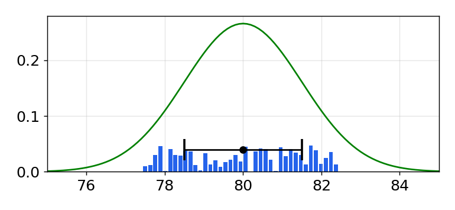
Designing a Thermometer Filter
- 온도를 전압으로 출력하는 온도계, white noise 표준편차 0.13 V 의 측정 생성
- 전압 변화를 감지할 센서가 없으므로 짧은 시간 동안 전압이 일정하다고 예측
- process_var 가 0 이면 확신이 과해져 실제 변화를 무시하는 smug filter 가 됨
- 조건: process_var = 0.05^2, 실제 16.3 V, 측정 50 개
def volt(voltage, std): return voltage + (randn() * std) temp_change = 0 voltage_std = .13 process_var = .05**2 actual_voltage = 16.3 N = 50 zs = [volt(actual_voltage, voltage_std) for i in range(N)] plots.plot_measurements(zs) plt.ylabel('volts');
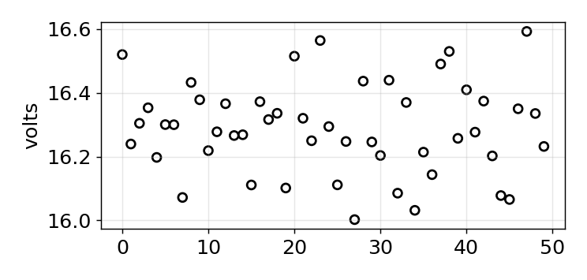
Thermometer Filter
- 초기값 25 V 를 큰 분산으로 두고 이동 0 의 predict, update 를 50 번 반복
- 큰 잡음에도 빠르게 실제 전압 근처로 수렴, 이후에는 prediction 을 더 신뢰
- 조건: 초기 N(25, 1000), 이동 0, R = 0.13^2, Q = 0.05^2
x = gaussian(25., 1000.) # initial state process_model = gaussian(0., process_var) ps, estimates = [], [] for z in zs: prior = predict(x, process_model) x = update(prior, gaussian(z, voltage_std**2)) # save for latter plotting estimates.append(x.mean) ps.append(x.var) # plot the filter output and the variance plots.plot_measurements(zs) plots.plot_filter(estimates, var=np.array(ps)) plots.show_legend() plt.ylim(16, 17); plots.set_labels(x='step', y='volts') print('Variance converges to {:.3f}'.format(ps[-1]))
Variance converges to 0.005
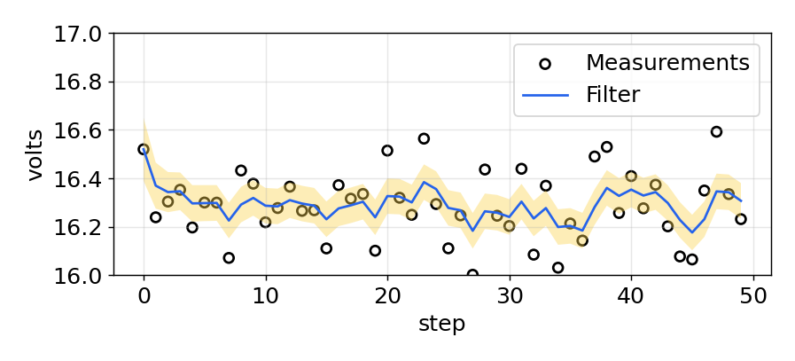
Sensor Specifications
Spec sheet
- 값은 보통 최대치, 최소 그 정도 성능이라는 보증
- 고가 장비는 개별 시험 결과 동봉, 저가 센서는 표본만 시험
- 범위가 최대치인지 3 sigma 인지, 분포가 정규인지 확인
Typical characteristics
- 공기 유량 센서 반복도 ±0.50%, Gaussian 인지, bias 인지
- LM555 타이머, 온도에 따라 휘는 출력 곡선, 비선형
- 개별 부품은 결함이 있을 수도 있음
핵심: 센서 성능을 모델링하는 일이 좋은 Kalman filter 를 만드는 가장 어려운 부분 중 하나
Extreme Amounts of Noise
- 센서 표준편차를 300 m 로 키워 측정이 실제 위치를 덮을 정도의 잡음 주입
- 그래도 필터 출력은 거의 직선, process 오차가 작아 직선인 예측을 크게 신뢰
- 조건: sensor_var 300^2, process_var 2, 초기 N(0, 500), 1000 회
sensor_var = 300.**2 process_var = 2. process_model = gaussian(1., process_var) pos = gaussian(0., 500.) N = 1000 dog = DogSimulation(pos.mean, 1., sensor_var, process_var) zs = [dog.move_and_sense() for _ in range(N)] ps = [] for i in range(N): prior = predict(pos, process_model) pos = update(prior, gaussian(zs[i], sensor_var)) ps.append(pos.mean) plots.plot_measurements(zs, lw=1) plots.plot_filter(ps) plt.legend(loc=4);
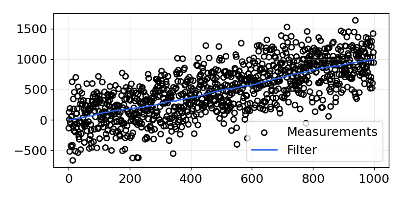
Incorrect Process Variance
- 개 속도가 매 단계 조금씩 증가하는데 process 분산은 0.001 로 매우 작게 설정
- 측정은 속도 변화를 분명히 보이지만 예측이 완벽하다고 들은 필터는 이를 무시
- 조건: 속도 매 단계 0.04 증가, process_var 0.001, sensor_var 20, 100 회
sensor_var = 20. process_var = .001 process_model = gaussian(1., process_var) pos = gaussian(0., 500.) N = 100 dog = DogSimulation(pos.mean, 1, sensor_var, process_var*10000) zs, ps = [], [] for _ in range(N): dog.velocity += 0.04 zs.append(dog.move_and_sense()) for z in zs: prior = predict(pos, process_model) pos = update(prior, gaussian(z, sensor_var)) ps.append(pos.mean) plots.plot_measurements(zs, lw=1) plots.plot_filter(ps) plt.legend(loc=4);
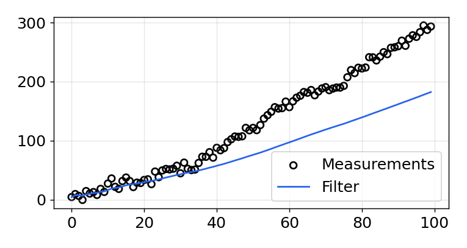
Bad Initial Estimate
- 실제 시작은 0 m 인데 초기 위치를 1000 m 로 잘못 잡고 필터 실행
- 첫 단계에서 약 50 m 로 이동 후 5 ~ 10 번 뒤 수렴, 분산이 맞으면 초기값 영향은 작음
- 조건: 초기 N(1000, 500), sensor_var 5^2, process_var 2, 100 회
sensor_var = 5.**2 process_var = 2. pos = gaussian(1000., 500.) process_model = gaussian(1., process_var) N = 100 dog = DogSimulation(0, 1, sensor_var, process_var) zs = [dog.move_and_sense() for _ in range(N)] ps = [] for z in zs: prior = predict(pos, process_model) pos = update(prior, gaussian(z, sensor_var)) ps.append(pos.mean) plots.plot_measurements(zs, lw=1) plots.plot_filter(ps) plt.legend(loc=4);
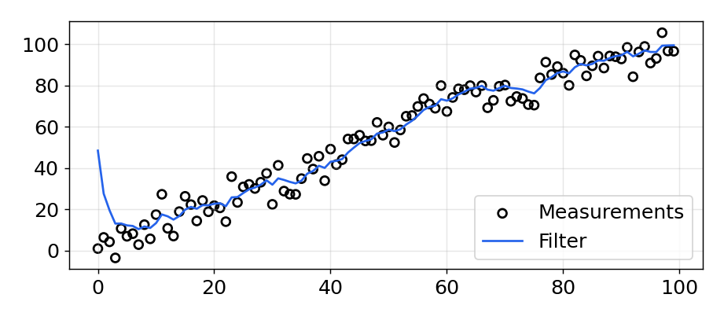
Large Noise and Bad Initial Estimate
- 센서 분산 30000 의 큰 잡음과 1000 m 의 잘못된 초기값을 동시에 적용
- 1000 번 갱신 중 수백 번을 반복해야 쓸 만한 추정, 잡음과 초기값이 모두 나쁘면 한계
- 조건: sensor_var 30000, 초기 N(1000, 500), process_var 2, 1000 회
sensor_var = 30000. process_var = 2. pos = gaussian(1000., 500.) process_model = gaussian(1., process_var) N = 1000 dog = DogSimulation(0, 1, sensor_var, process_var) zs = [dog.move_and_sense() for _ in range(N)] ps = [] for z in zs: prior = predict(pos, process_model) pos = update(prior, gaussian(z, sensor_var)) ps.append(pos.mean) plots.plot_measurements(zs, lw=1) plots.plot_filter(ps) plt.legend(loc=4);
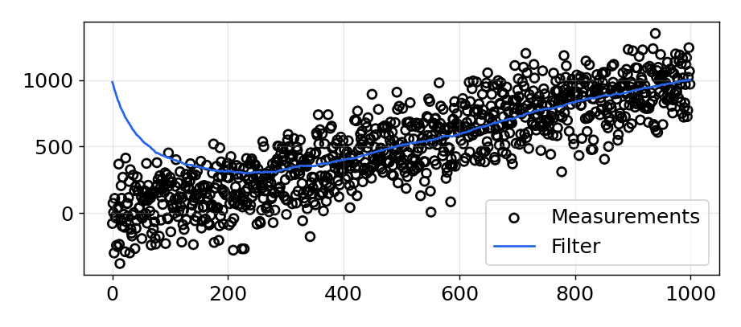
First Measurement as Initial Value
- 같은 조건에서 초기 위치만 첫 측정 zs[0] 으로 바꿔 필터 실행
- 간단한 변경으로 결과가 크게 개선, 실제 센서의 잡음은 이 예제보다 훨씬 작음
- 조건: sensor_var 30000, 초기 N(zs[0], 500), 1000 회
sensor_var = 30000. process_var = 2. process_model = gaussian(1., process_var) N = 1000 dog = DogSimulation(0, 1, sensor_var, process_var) zs = [dog.move_and_sense() for _ in range(N)] pos = gaussian(zs[0], 500.) ps = [] for z in zs: prior = predict(pos, process_model) pos = update(prior, gaussian(z, sensor_var)) ps.append(pos.mean) plots.plot_measurements(zs, lw=1) plots.plot_filter(ps) plt.legend(loc='best');
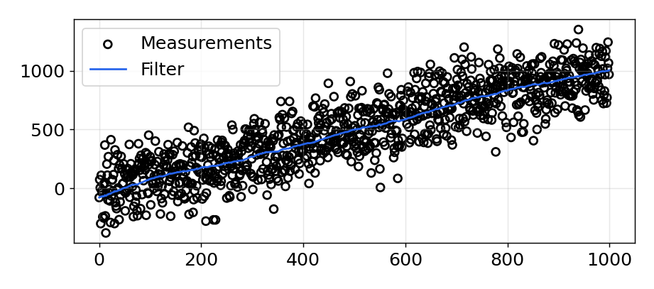
Exercise: Interactive Plots
- 시작 위치, 센서 잡음, 속도, process 잡음을 인자로 받아 필터를 실행하고 그리는 함수
- seed(303) 로 매번 같은 난수를 써서 파라미터만 바꾼 결과를 서로 비교 가능
- 조건: 20 단계, 초기 믿음 N(0, 1000), 호출 예 (0, 5, 1, 0.1)
def plot_kalman_filter(start_pos, sensor_noise, velocity, process_noise): N = 20 zs, ps = [], [] seed(303) dog = DogSimulation(start_pos, velocity, sensor_noise, process_noise) zs = [dog.move_and_sense() for _ in range(N)] pos = gaussian(0., 1000.) # mean and variance process_model = gaussian(velocity, process_noise) for z in zs: pos = predict(pos, process_model) pos = update(pos, gaussian(z, sensor_noise)) ps.append(pos.mean) plt.figure() plt.plot(zs, c='k', marker='o', linestyle='', label='measurement') plt.plot(ps, c='#004080', alpha=0.7, label='filter') plt.legend(loc=4); plot_kalman_filter(0, 5., 1., .1)
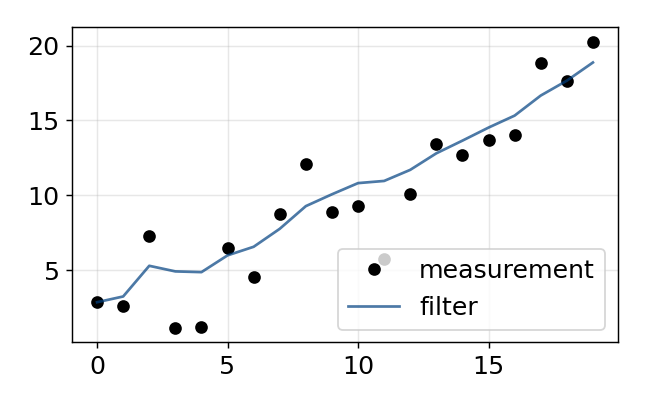
Exercise: Interactive Plots
- 슬라이더로 시작 위치, 센서 잡음, 속도, process 잡음을 바꾸며 출력 변화 관찰
- process 잡음은 개가 매 단계 경로를 벗어나는 정도로 개 위치에 더해짐
- 조건: seed 고정, start_pos -10 ~ 10, sensor_noise 0 ~ 100, process_noise 0 ~ 40
from ipywidgets import interact, FloatSlider interact(plot_kalman_filter, start_pos=(-10, 10), sensor_noise=FloatSlider(value=5, min=0., max=100), velocity=FloatSlider(value=1, min=-2., max=2.), process_noise=FloatSlider(value=.1, min=0, max=40));
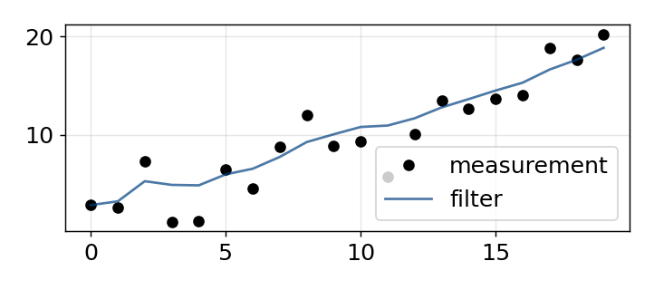
Exercise - Nonlinear Systems
- 선형 식(prior 는 두 Gaussian 의 합, posterior 는 곱)의 필터를 sin 곡선 측정에 적용
- 필터 출력이 sin 파형을 얼마나 따라가는지, 초기값 100 에서 어떻게 움직이는지 관찰
- 조건: 측정 2 sin(i/3) + 잡음, 모델은 속도 1 의 등속, 초기 N(100, 500)
import math sensor_var = 30. process_var = 2. pos = gaussian(100., 500.) process_model = gaussian(1., process_var) zs, ps = [], [] for i in range(100): pos = predict(pos, process_model) z = math.sin(i/3.)*2 + randn()*1.2 zs.append(z) pos = update(pos, gaussian(z, sensor_var)) ps.append(pos.mean) plt.plot(zs, c='r', linestyle='dashed', label='measurement') plt.plot(ps, c='#004080', label='filter') plt.legend(loc='best');
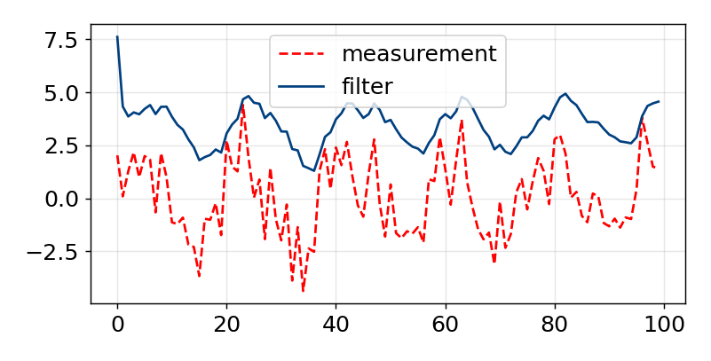
Why It Fails
- 결과: sin 파형과 거의 닮지 않은 출력, 적당한 잡음에도 나쁜 결과
- 원인: 계속 가속하는 신호, 모델은 등속 가정, 필터는 수학적으로 항상 뒤처짐
- g-h 필터와 같은 구조: 예측과 측정 사이의 값을 고르는 구조의 한계
- 필요: 비선형 시스템을 다루는 별도 기법 필요
핵심: 선형 시스템에서는 큰 잡음도 견디지만, 모델과 다른 비선형 거동에는 취약
Fixed Gain Filters
- 저가 임베디드 프로세서는 부동소수점 회로가 없어 이 간단한 식도 부담
- 분산이 상수면 분산과 gain 이 상수로 수렴, 그 gain 을 미리 구해 코드에 고정
- 조건: K = 0.13232, 측정 분산 4.5, process 분산 2, 측정 40 개
vel, dt = 1., 1. def update(x, z): K = .13232 # experimentally derived Kalman gain y = z - x # residual x = x + K*y # posterior return x def predict(x): return x + vel*dt dog = DogSimulation(0, 1, 4.5, 2.) zs = [dog.move_and_sense() for _ in range(40)] x, xs = zs[0], [] for z in zs: x = update(predict(x), z) xs.append(x) plots.plot_measurements(zs) plots.plot_filter(xs) plt.legend(loc=4);
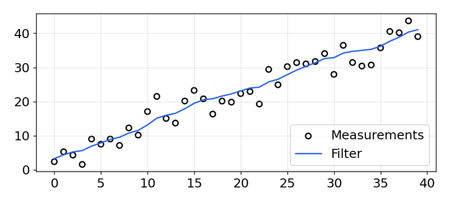
Summary
- 흐름: g-h 필터 → discrete Bayes 필터 → 1 차원 Kalman filter, 같은 알고리즘과 추론
- 표현: 믿음을 Gaussian 으로, 예측은 합, 갱신은 곱
- Kalman gain: prior 와 측정의 분산 비율로 residual 위의 위치 결정
- 확장: 다차원 Kalman filter, 더 정교하지만 성능도 크게 향상
결론: 예측과 측정 사이의 어딘가를 고르는 하나의 기법, 필터마다 수학만 다름